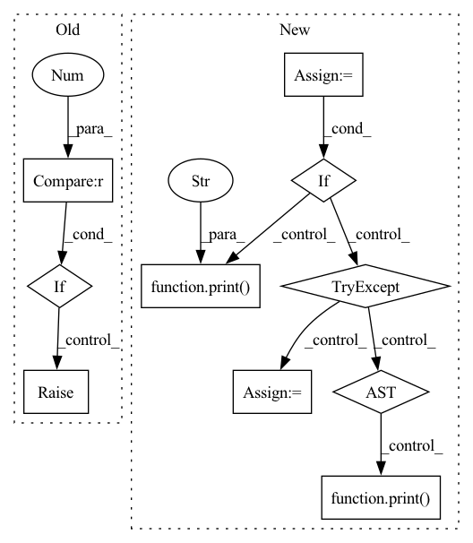

Pattern ID :21500

Before Change
if file in d:
r = gdrive_download(id=d[file], name=weights)
if not (r == 0 and os.path.exists(weights) and os.path.getsize(weights) > 1E6): // weights exist and > 1MB
os.remove(weights) if os.path.exists(weights) else None // remove partial downloads
s = "curl -L -o %s "storage.googleapis.com/ultralytics/yolov5/ckpt/%s"" % (weights, file)
r = os.system(s) // execute, capture return values
// Error check
if not (r == 0 and os.path.exists(weights) and os.path.getsize(weights) > 1E6): // weights exist and > 1MB
os.remove(weights) if os.path.exists(weights) else None // remove partial downloads
raise Exception(msg)
def gdrive_download(id="1n_oKgR81BJtqk75b00eAjdv03qVCQn2f", name="coco128.zip"):
After Change
file = Path(weights).name
msg = weights + " missing, try downloading from https://github.com/ultralytics/yolov5/releases/"
models = ["yolov5s.pt", "yolov5m.pt", "yolov5l.pt", "yolov5x.pt"] // available models
if file in models and not os.path.isfile(weights):
// Google Drive
// d = {"yolov5s.pt": "1R5T6rIyy3lLwgFXNms8whc-387H0tMQO",
// "yolov5m.pt": "1vobuEExpWQVpXExsJ2w-Mbf3HJjWkQJr",
// "yolov5l.pt": "1hrlqD1Wdei7UT4OgT785BEk1JwnSvNEV",
// "yolov5x.pt": "1mM8aZJlWTxOg7BZJvNUMrTnA2AbeCVzS"}
// r = gdrive_download(id=d[file], name=weights) if file in d else 1
// if r == 0 and os.path.exists(weights) and os.path.getsize(weights) > 1E6: // check
// return
try: // GitHub
url = "https://github.com/ultralytics/yolov5/releases/download/v2.0/" + file
print("Downloading %s to %s..." % (url, weights))
if platform.system() == "Darwin": // avoid MacOS python requests certificate error
r = os.system("curl -L %s -o %s" % (url, weights))
else:
torch.hub.download_url_to_file(url, weights)
assert os.path.exists(weights) and os.path.getsize(weights) > 1E6 // check
except Exception as e: // GCP
print("Download error: %s" % e)
url = "https://storage.googleapis.com/ultralytics/yolov5/ckpt/" + file
print("Downloading %s to %s..." % (url, weights))
r = os.system("curl -L %s -o %s" % (url, weights)) // torch.hub.download_url_to_file(url, weights)
finally:
if not (os.path.exists(weights) and os.path.getsize(weights) > 1E6): // check
os.remove(weights) if os.path.exists(weights) else None // remove partial downloads
print("ERROR: Download failure: %s" % msg)
print("")
return
def gdrive_download(id="1n_oKgR81BJtqk75b00eAjdv03qVCQn2f", name="coco128.zip"):
In pattern: SUPERPATTERN
Frequency: 6
Non-data size: 10
Instances
Fragment ID: 68823752
Project Name: positive666/yolov5_research
Commit Name: 1f92422e206405972e7e9766b47dcf044c9a784e
Time: 2020-08-11
Author: marcpaquet2@hotmail.com
File Name: utils/google_utils.py
M Class Name: AnonimousClass
N Class Name: AnonimousClass
M Method Name: attempt_download(1)
N Method Name: attempt_download(1)
M Parent Class:
N Parent Class:
M File Name: utils/google_utils.py
N File Name: utils/google_utils.py
M Start Line: 13
M End Line: 39
N Start Line: 14
N End Line: 50
'>
Before Change
def delete_workspace(args: Namespace) -> None:
sess = setup_session(args)
w = workspace_by_name(sess, args.workspace_name)
if w.numExperiments > 0:
raise errors.ForbiddenException(
authentication.must_cli_auth().get_session_user(),
"Workspaces with associated experiments currently cannot be deleted. "
"Use archive to hide workspaces.",
After Change
"For a recoverable alternative, see the "archive" command. Do you still \n"
"wish to proceed?"
):
resp = bindings.delete_DeleteWorkspace(sess, id=w.id)
if resp.completed:
print(f"Successfully deleted workspace {args.workspace_name}.")
else:
print(f"Started deletion of workspace {args.workspace_name}...")
while True:
sleep(2)
try:
w = bindings.get_GetWorkspace(sess, id=w.id).workspace
if w.state == bindings.v1WorkspaceState.WORKSPACE_STATE_DELETE_FAILED:
raise errors.DeleteFailedException(w.errorMessage)
elif w.state == bindings.v1WorkspaceState.WORKSPACE_STATE_DELETING:
print(f"Remaining project count: {w.numProjects}")
except errors.NotFoundException:
print("Workspace deleted successfully.")
break
else:
print("Aborting workspace deletion.")
'>
Fragment ID: 68823769
Project Name: determined-ai/determined
Commit Name: cde91c8e90d3897339b53c140c7ef1ddd365d61a
Time: 2022-08-16
Author: nick.doiron@hpe.com
File Name: harness/determined/cli/workspace.py
M Class Name: AnonimousClass
N Class Name: AnonimousClass
M Method Name: delete_workspace(1)
N Method Name: delete_workspace(1)
M Parent Class:
N Parent Class:
M File Name: harness/determined/cli/workspace.py
N File Name: harness/determined/cli/workspace.py
M Start Line: 129
M End Line: 144
N Start Line: 130
N End Line: 154
'>
Before Change
def delete_project(args: Namespace) -> None:
sess = setup_session(args)
(w, p) = project_by_name(sess, args.workspace_name, args.project_name)
if p.numExperiments > 0:
raise errors.ForbiddenException(
authentication.must_cli_auth().get_session_user(),
"Projects with associated experiments currently cannot be deleted. "
"Use archive to hide projects.",
After Change
"For a recoverable alternative, see the "archive" command. Do you still \n"
"wish to proceed?"
):
resp = bindings.delete_DeleteProject(sess, id=p.id)
if resp.completed:
print(f"Successfully deleted project {args.project_name}.")
else:
print(f"Started deletion of project {args.project_name}...")
while True:
sleep(2)
try:
p = bindings.get_GetProject(sess, id=p.id).project
if p.state == bindings.v1WorkspaceState.WORKSPACE_STATE_DELETE_FAILED:
raise errors.DeleteFailedException(p.errorMessage)
elif p.state == bindings.v1WorkspaceState.WORKSPACE_STATE_DELETING:
print(f"Remaining experiment count: {p.numExperiments}")
except errors.NotFoundException:
print("Project deleted successfully.")
break
else:
print("Aborting project deletion.")
'>
Fragment ID: 68823788
Project Name: determined-ai/determined
Commit Name: cde91c8e90d3897339b53c140c7ef1ddd365d61a
Time: 2022-08-16
Author: nick.doiron@hpe.com
File Name: harness/determined/cli/project.py
M Class Name: AnonimousClass
N Class Name: AnonimousClass
M Method Name: delete_project(1)
N Method Name: delete_project(1)
M Parent Class:
N Parent Class:
M File Name: harness/determined/cli/project.py
N File Name: harness/determined/cli/project.py
M Start Line: 135
M End Line: 150
N Start Line: 136
N End Line: 160